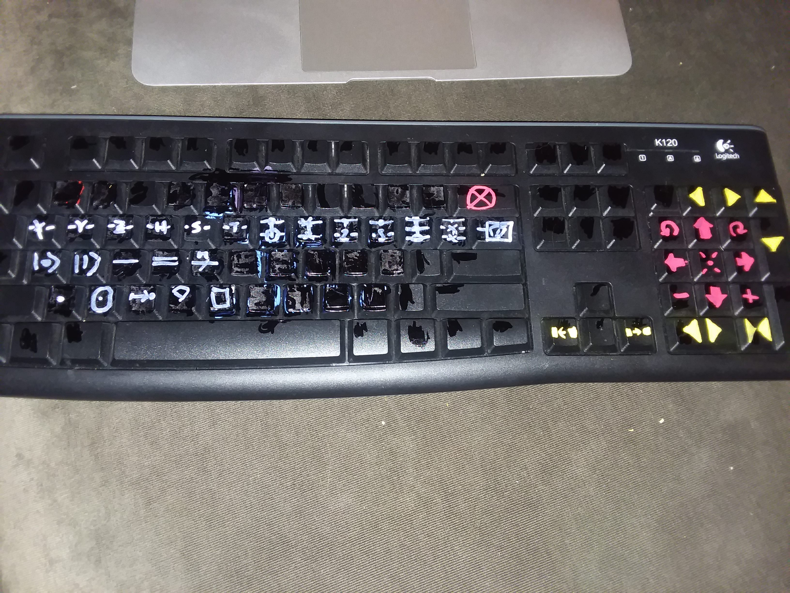

BACK TO QUANTUM GATE DESIGNER
Open this page on a computer with a physical keyboard(not touch screen).
Click cursor into small input field in upper left corner of screen, inside black box.
Hit keys on keyboard, using number pad for moving cursor and qwerty and asdf keys to create symbols.
Copy code from middle top wide input, save locally or message to another user,
and they can load this page and paste the same code to get the same figure.
